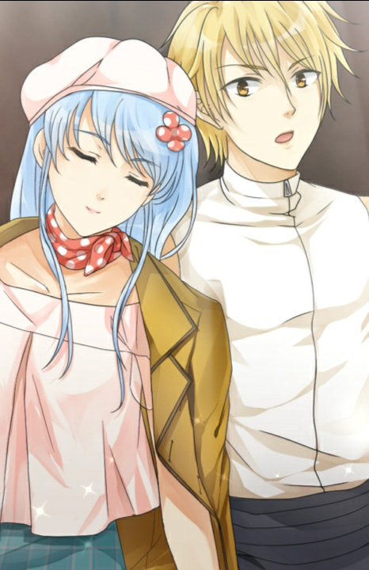

How to Take Off Your Mask Remaster
Visual novel de fantasia fofa, "How to Take Off Your Mask" volta em uma versão remasterizada! A história é a mesma, mas tem muitas melhorias, conforme mencionado abaixo. - O jogo é reprogramado usando Unity e agora suporta resolução HD, 60fps. - UI aprimorada e novas interfaces animadas. - Os movimentos dos olhos e da boca foram adicionados a todos os personagens. - A maioria dos CGs foi aprimorada para oferecer a você uma experiência melhor. - Todos os Backgrounds foram redesenhados - Suporte para gamepad e Linux foram adicionados. OBS: Se vc ja comprou a primeira versão, a versão remasterizada pode ser adquirida por um preço menor! Esta é Leezera, a capital da Eroolia. Lilia é apenas uma garota comum que trabalha em uma padaria. Ela passa todos os dias feliz com seu amigo de infância, Ronan. Um dia Lilia descobre que seu corpo encolheu. Além disso, ela tem orelhas de gato e cauda crescidas?! Ela não sabe que é na verdade uma luccretia, uma criatura meio humana e meio felina. Ela entra em pânico, pula pela janela de seu quarto e corre em direção à cidade. E a primeira pessoa que ela encontra é o guarda da cidade, Ronan. A máscara de "Irmã mais velha" e "Garota Luccretia" que ela usa. A máscara de "Irmão mais novo" e "Guarda da Cidade" que ele usa. Qual deles será retirado primeiro?
⬇ Download